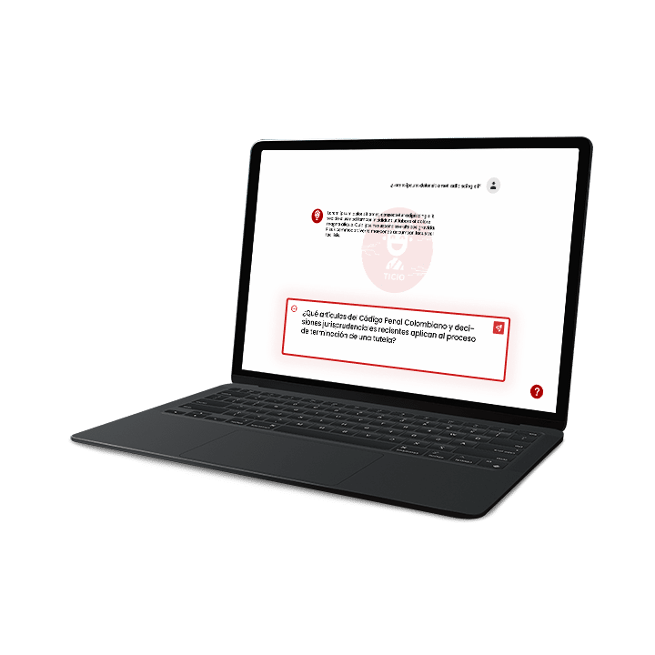

¿Cómo funciona?
Nuestra aplicación con tecnología de inteligencia artificial ayuda a realizar tus prácticas legales de forma eficiente y a la vanguardia.
Tempor incididunt
¿Que es la Generación Aumentada?
En el corazón de Ticio yace una tecnología innovadora
conocida como
Generación Aumentada por Recuperación
(RAG por sus siglas en inglés).
Esta solución de vanguardia representa un avance
significativo en cómo los profesionales legales acceden,
analizan y utilizan la información.
La Generación Aumentada por Recuperación es un modelo
híbrido de IA que combina lo mejor de dos mundos:
la comprensión profunda de los modelos de lenguaje y los
sistemas de recuperación de información precisos y
enfocados.
RAG funciona
identificando primero la información exacta necesaria de
una vasta base de datos y luego personalizando la
generación de texto basada en esta información recuperada.
Este proceso asegura que la información proporcionada sea
tanto altamente relevante como rica contextualmente,
permitiendo a los profesionales legales tomar decisiones
informadas más rápidamente que nunca.
¿Por Qué RAG para el Derecho?
En el campo legal, donde la precisión de la información
y la velocidad de recuperación son primordiales, RAG
destaca al ofrecer precisión con recuperación de
información dirigida que asegura obtener exactamente lo
necesario en el momento adecuado.
Reduce significativamente el tiempo dedicado a revisar
documentos y expedientes con asistencia potenciada por
IA
y se adapta a diversas necesidades, ya sea en la
redacción de contratos, preparación para litigios o
gestión de riesgos.
Tempor incididunt
¿Por Qué Elegir Ticio?
En un mundo donde la tecnología avanza a pasos
agigantados, la práctica legal no se debe quedar atrás.
Ticio emerge como el socio tecnológico definitivo para
abogados, ofreciendo un abanico de productos y soluciones
dentro de un ecosistema de Generación
Aumentada completamente integrado y gestionado.
Lo que distingue a Ticio es su enfoque holístico hacia la
innovación legal. Nuestros productos no son soluciones
aisladas; forman parte de un ecosistema pensado de
principio a fin para ser consumido por abogados.
Sobre nosotros